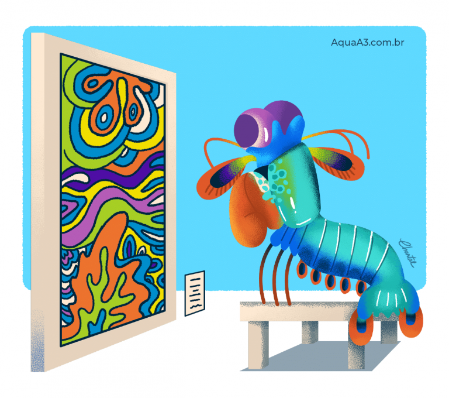

Fatos sobre o Stomatopoda
Mas antes, alguns dados sobre o super Mantis!
- Nome Ciêntifico: Odontodactylus scyllarus
- Reino: Animalia
- Filo: Arthropoda
- Subfilo: Crustacea
- Classe: Malacostraca
- Subclasse: Hoplocarida
- Ordem: Stomatopoda
Força esmagadora

O Camarão Mantis esmagador possui dois apêndices bem desenvolvidos (semelhantes a um martelo), chamados de Porretes de Dáctilo. Com essas “super patas” o animal espanca e esmaga suas presas em uma intensidade de aproximadamente 60 kg/cm² (daí o motivo de um de seus nomes ser lagosta-boxeadora).
Velocidade descomunal

Além da enorme potência de seu soco, esse animal consegue movimentar seus apêndices tal qual um tiro de arma de fogo: seu golpe pode chegar a uma velocidade 720 km/h. Curiosamente, tanto a força quanto rapidez do ataque, não danificam sua estrutura corporal.
Super visão
Uma das espécies de camarão mantis (Gonodactylus smithii) têm os olhos mais complexos do reino animal e é capaz de ver cores invisíveis a vários outros animais, do ultravioleta ao infravermelho. A descoberta foi anunciada por cientistas suíços e australianos.
Muito além de suas peculiaridades motoras, o Camarão Mantis apresenta uma extensa gama de características únicas. A mais emblemática delas, é o fato de que possui o mais complexo sistema de visão de cores do mundo animal, conseguindo processar 16 cores ao todo.
Enquanto nós humanos conseguimos processar somente três tipos de cores primárias (vermelho, verde e azul), esse distinto animal é capaz de enxergar 12 cores primárias porque possui 12 cones de percepção de cor. Os quatro cones restantes, lhe permite enxergar imagens multiespectrais, como a luz ultravioleta.